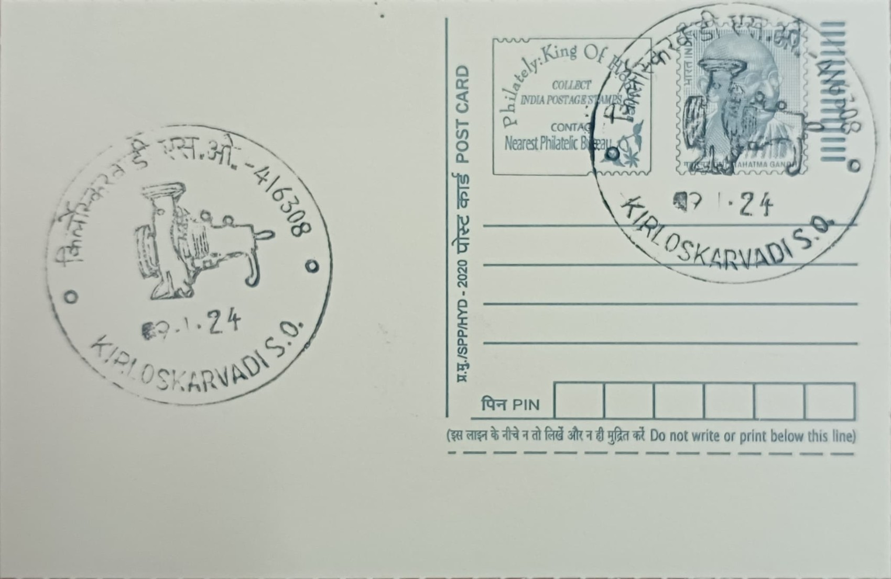

Kirloskar Engine
किर्लोस्कर इंजिन


The term "Kirloskar Engine" traces back to a modest workshop venture in Belgaum and Pune where Laxmanrao Kashinath Kirloskar (1869-1956), originally trained in technical drawing, began repairing bicycles and fabricating simple iron implements before turning to agricultural tools. Finding little support from British trading firms for indigenous manufacturing, he resolved to build machinery entirely with Indian capital, labour, and management, a conviction that in time lent the Kirloskar name its lasting association with self-made engineering rather than with any single product or legend of origin. The engines that eventually carried the family name grew directly out of this resolve to manufacture what India had previously imported.
As a subject of philatelic commemoration, the Kirloskar Engine represents an institutional and economic legacy rather than a monument or natural feature, standing for the broader achievement of early Indian industrial self-reliance under colonial-era constraints. The enterprise is counted among the first indigenous Indian engineering ventures to manufacture iron ploughs and later oil and diesel engines at scale, at a time when such machinery was almost entirely imported from Britain and continental Europe. Its significance lies in demonstrating that Indian-owned firms could design, cast, and machine industrial equipment domestically, a point of considerable pride within the swadeshi industrial movement and a precedent that shaped subsequent engineering enterprises across Maharashtra and beyond.
Laxmanrao Kirloskar established his factory in March 1910 on arid land beside the Kundal Road railway station in Sangli district, starting with a workforce of roughly twenty-five men producing iron ploughs before diversifying into oil engines and other agricultural machinery. Having read about planned industrial townships in Europe and the United States, he laid out Kirloskarwadi as a self-contained company town with housing, schools, a hospital, and recreational facilities for workers alongside the factory itself, an unusual model for Indian industry at the time. The settlement and railway halt were subsequently renamed Kirloskarwadi after the enterprise, and the factory's oil engines and pumps became staple equipment for irrigation and small-scale industry across rural India over the following decades.
A distinguishing chapter in the engine's development came after independence, when Laxmanrao's son Shantanurao Kirloskar founded Kirloskar Oil Engines Limited in Pune in 1946, building on the manufacturing base established at Kirloskarwadi to produce diesel engines as a deliberate import substitute. Under his direction the company pursued indigenous design and component manufacture rather than assembling licensed foreign engines, and it grew into one of India's largest diesel engine makers by the 1960s, later entering international technical collaborations and beginning export of pumps to Europe in the 1970s. The Kirloskarwadi works themselves remained the originating site, their output of reliable, low-cost engines and pumps becoming closely identified with the modernisation of Indian agriculture.
The Kirloskar Group today operates as a diversified conglomerate of several independent companies, including Kirloskar Brothers Limited and Kirloskar Oil Engines Limited, with manufacturing units that have since expanded to locations such as Kagal in Kolhapur district while Kirloskarwadi continues to anchor the group's industrial origins in Sangli. The township itself, still home to Kirloskar Brothers' foundry and engineering works, is maintained by the company much as Laxmanrao envisioned it, functioning as both an active production site and a reference point for the group's early history. The postal pictorial cancellation issued for Kirloskarvadi SO commemorates this specific industrial heritage, marking the post office as the administrative centre of a township built entirely around the enterprise it continues to serve.
| Date of Introduction | November 24, 2022 |
|---|---|
| Address | Sub Postmaster, |
| Kirloskarvadi SO, | |
| Sangli (dt.), Maharashtra - 416308. |